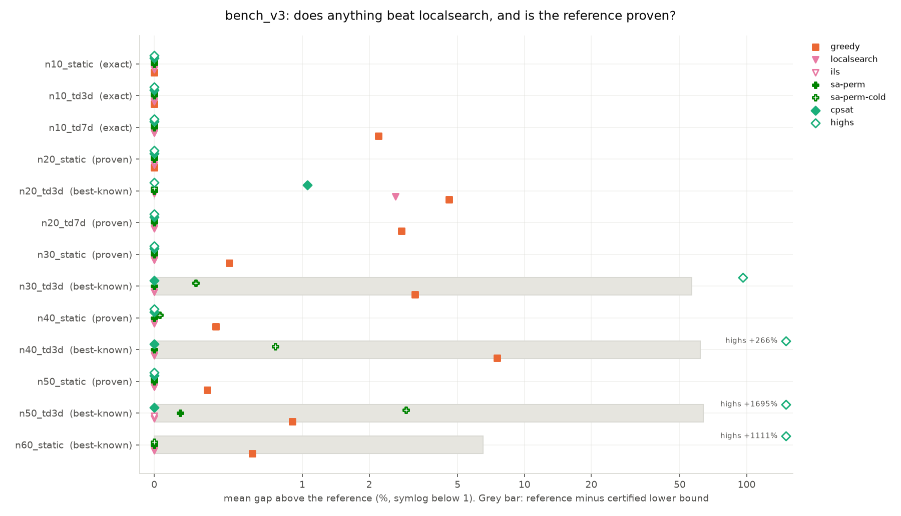
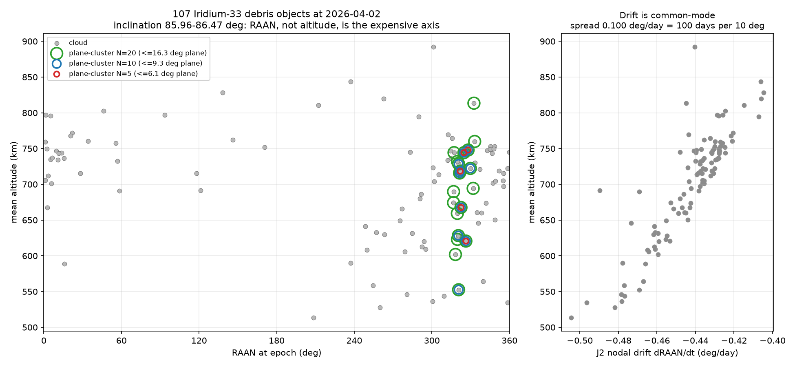

The result
Real breakup clouds give near-one-dimensional instances, and on them greedy is often provably optimal. That is the finding, not a footnote. A plane-cluster of Iridium-33 debris shares one inclination, so plane angle is RAAN difference: visiting the objects in RAAN order — a sort — meets a certified lower bound on 8 of the 9 static v2 instances. Adding the other half of the collision (Cosmos-2251, 74° against 86.4°) gives two strips crossed once: sweeping each cloud in RAAN order is within 0–1.18% of a certified bound on every static v3 instance. The diagnostics were committed before any solver ran on v3.
| family | instances | exact | proven | best-known | greedy provably optimal (static) | instances where anything beats localsearch | worst sa-qubo gap |
|---|---|---|---|---|---|---|---|
v1 planecluster-v1 | 12 | 10 | 2 | 0 | 6 of 6 | 0 | +121% |
v2 planecluster-v2 | 31 | 21 | 9 | 1 | 8 of 9 | 0 | +353% |
v3 collisionpair-v3 | 13 | 3 | 5 | 5 | 2 of 6 | 1 | +299% |
exact Held-Karp ran.
proven a certified lower bound from highs or
cpsat meets the best path found — v1 n20_td30d is now proven.
best-known neither; printed with its bound and gap, never called an
optimality gap. Full per-instance tables, all from the committed summary.csv
files, are in the README.

highs' off-scale points at N ≥ 40 are unfinished branch-and-bound incumbents; its
job there is the bound.Where anything has headroom — and where nobody can tell
| v3 instance | best-known (km/s) | certified bound | gap | localsearch | ils | sa-perm |
|---|---|---|---|---|---|---|
n20_td3d | 6.9200 | 6.9200 | 0.00015% | +2.63% | +0.00% | +0.00% |
n30_td3d | 10.1677 | 4.3932 | 56.79% | +0.00% | +0.00% | +0.00% |
n40_td3d | 13.4336 | 5.1076 | 61.98% | +0.00% | +0.00% | +0.00% |
n50_td3d | 16.1235 | 5.8367 | 63.80% | +0.00% | +0.00% | +0.18% |
n20_td3d is the only measured headroom in the benchmark: localsearch stops 2.63%
short, and iterated local search and permutation annealing find the better path on every seed.
At N ≥ 30 the picture is unresolved: the bounds are too weak to certify. No run
of any solver beats localsearch there, and the evidence favours bound weakness over hidden
headroom — on the four v3 time-dependent instances whose optimum is pinned, the cut-LP bound
alone sits 30–70% below the true optimum, and at N ≥ 30 the certified bound is that
cut LP. A few percent of headroom, like n20_td3d's, is not excluded.
The QUBO encoding, not the annealing, is what fails
sa-perm anneals the same objective over permutations; sa-qubo
anneals N² penalised binaries. sa-perm ties the reference everywhere except a
+0.18% mean on v3 n50_td3d. sa-qubo is the worst search heuristic at
every N ≥ 10, reaching +353% at N=40, and refuses N > 40 — with more wall clock than
sa-perm's 1 s and in compiled C++. The greedy head start sa-perm enjoys
is now measured by sa-perm-cold: it matters only at N ≥ 20, by up to 2.92% mean.
The problem
Given N catalogued fragments of the Iridium-33 debris cloud and a delta-v cost to transfer between any two, find the visiting order that costs the least. The 2009 Iridium-33 / Cosmos-2251 collision left more than 2,000 trackable fragments in low Earth orbit; active debris removal is limited by propellant, so the order in which targets are visited decides whether a mission is affordable at all.
It is an open path, not a TSP tour. The servicer starts at the first object and stops at the last — no return leg, no depot, exactly N-1 legs. The textbook TSP QUBO would charge the mission for a leg it never flies.
The physics
Orbits come from TLEs propagated with SGP4 to the snapshot's median TLE epoch — never a hardcoded date. Transfer cost is a two-burn impulsive manoeuvre between circular orbits at each object's mean semi-major axis, with the plane change folded into the burns and the split between them solved numerically.

Because a median leg costs 5.80 km/s — more than a launch to GEO — full-cloud tours
are physically absurd. Instances are built by a plane-cluster rule fixed
before any solver runs, which never looks at delta-v or at which solver wins.
Why the first version was wrong
This project began as an altitude-only tool. Three things were wrong with it, all three visible in the git history rather than reconstructed.
- The propagation ran ~15 months backward. A hardcoded epoch of 2025-01-01 against a TLE set whose median epoch is 2026-04-02 — 455 days in the wrong direction. It moves mean altitudes by up to 108 km, and SGP4 refuses outright on one of the 107 objects.
- Altitude was the instantaneous radius, with the wrong Earth.
|r| − 6371 kmoscillates once per orbit (285 km peak-to-peak for the most eccentric object) and mixes in a spherical radius where SGP4 uses WGS72. Per-object disagreement against the mean semi-major axis reaches 144 km. - The benchmark was degenerate — the one that actually mattered. Every cost derived from one scalar per object, so the objects lie on a line, the optimum is a sort, and greedy tied the exact optimum at 0.1262 km/s. A benchmark whose baseline is provably optimal measures nothing.
The degeneracy is locked down rather than deleted: a test still asserts that sorting by altitude is optimal under the altitude-only model, so it cannot quietly return.
The QUBO
One binary per (object, position) pair — x[i,p] = 1 when object
i is visited p-th — so N² variables, with penalty terms forcing a
permutation matrix. The objective sums N-1 leg terms, not N: open path, no wrap-around.
Because the QUBO's position index and the instance's time slot are the same integer, a
time-dependent instance produces a QUBO of exactly the same shape.
The qubit wall
The position encoding needs N² qubits, and a dense statevector is 2(N²) complex
amplitudes: N=5 is 512 MB before the optimiser evaluates anything, and N=6 is 1 TB. So
qaoa reaches N=4 in this benchmark and nothing larger, while exact — a
dynamic program from 1962 — reaches N=18 on the same laptop. The quantum solver's ceiling
sits an order of magnitude below the classical oracle's, on the same problem, in the same
encoding. That gap is the headline quantum result here.
At N=4 the +0.00% gap in the table above is not evidence of anything: there are 24 possible sequences among 216 bitstrings, and best-of-4096-shots plus repair recovers the optimum from uniform random bits. The only numbers at that size with any signal are measured against chance:
| instance | raw feasibility | uniform baseline | P(optimal bitstring) | uniform P(optimal) | mean Δv, feasible samples | mean Δv, random permutation |
|---|---|---|---|---|---|---|
| n4_static | 0.0344 ± 0.0251 | 0.000366 | 0.0049 ± 0.0041 | 0.0000305 | 0.9586 | 1.0261 |
| n4_td30d | 0.0270 ± 0.0229 | 0.000366 | 0.0016 ± 0.0017 | 0.0000153 | 0.9103 | 0.9735 |
One real effect and one disappointment. QAOA does concentrate amplitude on the feasible subspace — by roughly 94× and 74× — and on the optimal bitstring by 162× and 102×. But within the feasible set it barely optimises: the mean delta-v of its feasible samples is only 6.6% and 6.5% better than a uniformly random permutation. It is finding permutations, not good permutations.
Every QAOA runtime in this project is classical simulation time:
statevector time for qaoa (118.67 s ± 16.52 per run on v1 n4_static),
subspace time for qaoa-swap (0.40–4.11 s mean per run). qaoa-swap
reaches N=9 only because its feasible subspace has N! amplitudes, which a classical simulator
evolves exactly. No quantum hardware was involved.
Reproduce it
From a clean clone. No network access is required — the TLE snapshots, the three instance families and the three canonical runs are all committed. Runs are resumable.
uv sync --all-extras
uv run dextrivia bench --out results/my-v1
uv run dextrivia bench --instance-dir data/instances/planecluster-v2 --out results/my-v2 --no-penalty-study
uv run dextrivia bench --instance-dir data/instances/collisionpair-v3 --out results/my-v3 --no-penalty-study
uv run python scripts/results_tables.py results/my-v1 results/my-v2 results/my-v3Limitations
- The cost model still ignores phasing — the single largest omission. The servicer is assumed to arrive at the right point in the target's orbit for free.
- Real-data instances are nearly one-dimensional. A millisecond local search ties the reference on 55 of 56 instances. A stronger claim about any solver needs constraints the real geometry does not supply — propellant, time windows, conjunction risk — not more seeds.
- Six references are best-known, not proven. Four v3 time-dependent
instances at N ≥ 20 and v2
n40_td3dcarry certified gaps, and v3n60_staticis certified only by the pre-registered untimed bound, not by the run. - The Cosmos-2251 half of v3 has no measured propagation horizon. The 177-day horizon was measured on Iridium-33 only, and crossing 12° of inclination between the clouds (~1.6 km/s) is not a realistic mission; v3 exists to test solvers.
- One QUBO formulation, one annealer, one QAOA depth range. These results bound this encoding on this problem, not quantum optimisation in general.
- No conjunction-risk weighting, propellant budget, time windows, or vehicle constraints.